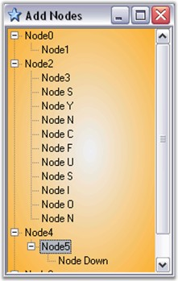

This event is triggered when the key is first pressed. An example which uses the KeyDown event is as follows.
Event Data
The KeyEventHandler receives an argument of type KeyEventArgs containing data related to this event. The following KeyEventArgs members provide information specific to this event.
|
Members |
Description |
|
Alt |
Gets a value indicating whether the ALT key was pressed. |
|
Control |
Gets a value indicating whether the CTRL key was pressed. |
|
Handled |
Gets or sets a value indicating whether the event was handled. |
|
KeyCode |
Gets the keyboard code for a KeyDown or KeyUp event. |
|
KeyData |
Gets the key data for a KeyDown or KeyUp event. |
|
KeyValue |
Gets the keyboard value for a KeyDown or KeyUp event. |
|
Modifiers |
Gets the modifier flags for a KeyDown or KeyUp event. The flags indicate which combination of CTRL, SHIFT, and ALT keys was pressed. |
|
Shift |
Gets a value indicating whether the SHIFT key was pressed. |
|
SuppressKeyPress |
Gets or sets a value indicating whether the key event should be passed on to the underlying control. |
Adding nodes into the TreeViewAdv using KeyBoard
The nodes can be added to the TreeViewAdv when any key is pressed, whereby the text of the node reflects the key that has been used for adding the node, by using the following code in the TreeViewAdv KeyDown event handler.
|
Border Settings[C#]
// Setting the keydata to the newly added node. // Add the nodes to the selected node. private void
treeViewAdv1_KeyDown(object sender,
System.Windows.Forms.KeyEventArgs e)
// Setting the keydata to the newly added node.
// Add the nodes to the selected node. |
|
[VB.NET]
Private Sub treeViewAdv1_KeyDown(ByVal sender As Object, ByVal e As System.Windows.Forms.KeyEventArgs)
' Setting the keydata to the newly added node. Dim node As TreeNodeAdv = New TreeNodeAdv("Node" & " " & e.KeyData.ToString())
' Add the nodes to the selected node. Me.treeViewAdv1.SelectedNode.Nodes.Add(node) Console.WriteLine("The " & node.Text & " " & "is added") End Sub |

Figure 1168: Nodes added using Keyboard